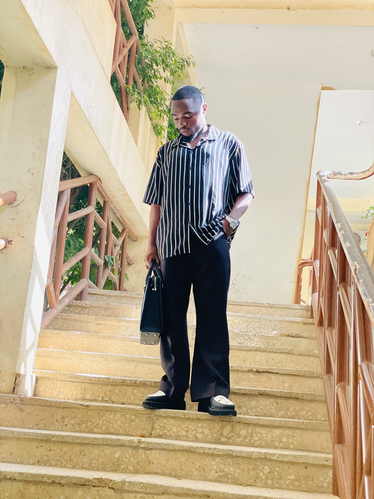

Where I Am Building
I am developing practical experience in sales promotion, marketing, networking and business development while working with emerging brands and learning how businesses grow.
I am Ilorin Samson, a Petroleum Engineering graduate of Abubakar Tafawa Balewa University, Bauchi, Nigeria, building at the intersection of business, sales, marketing, networking and entrepreneurship.

My academic background is in Petroleum Engineering, but my interests extend into the business side of how products, people and ideas create value.
I am developing practical experience in sales promotion, marketing, networking and business development while working with emerging brands and learning how businesses grow.
I believe strong relationships, clear communication and consistent action can turn simple connections into meaningful opportunities.
My focus is practical: helping people, products and ideas move from being seen to being discussed, connected and acted on.
Building meaningful professional relationships and opening conversations that can lead to useful opportunities.
Helping emerging brands create visibility, start conversations with customers and pursue sales opportunities.
Exploring practical ways to communicate a product, service or idea so the right people notice it.
I am open to practical collaborations where I can help a brand, business or professional create visibility, reach customers or connect with useful people.
I am not presenting myself as someone who has everything figured out. I am documenting the process of becoming better at business, sales, communication and entrepreneurship.
Building a technical foundation through my degree at Abubakar Tafawa Balewa University, Bauchi, Nigeria.
Working with emerging fashion brands has given me a practical environment to learn customer conversations, promotion and sales.
Growing my network, documenting lessons and creating opportunities across business, marketing and entrepreneurship.
The long-term goal is to turn skills, relationships and experience into ventures that create measurable value and opportunities.
Bauchi, Nigeria
I am interested in opportunities where I can contribute through networking, sales promotion, marketing, business development or collaboration.
For brands looking for someone to help promote products, reach people and create conversations.
For professionals, founders and creatives who value meaningful connections and mutually useful opportunities.
For interesting projects where commercial thinking, communication and initiative can create value.
If there is a genuine opportunity to collaborate, promote, connect or create value, let’s start a conversation.